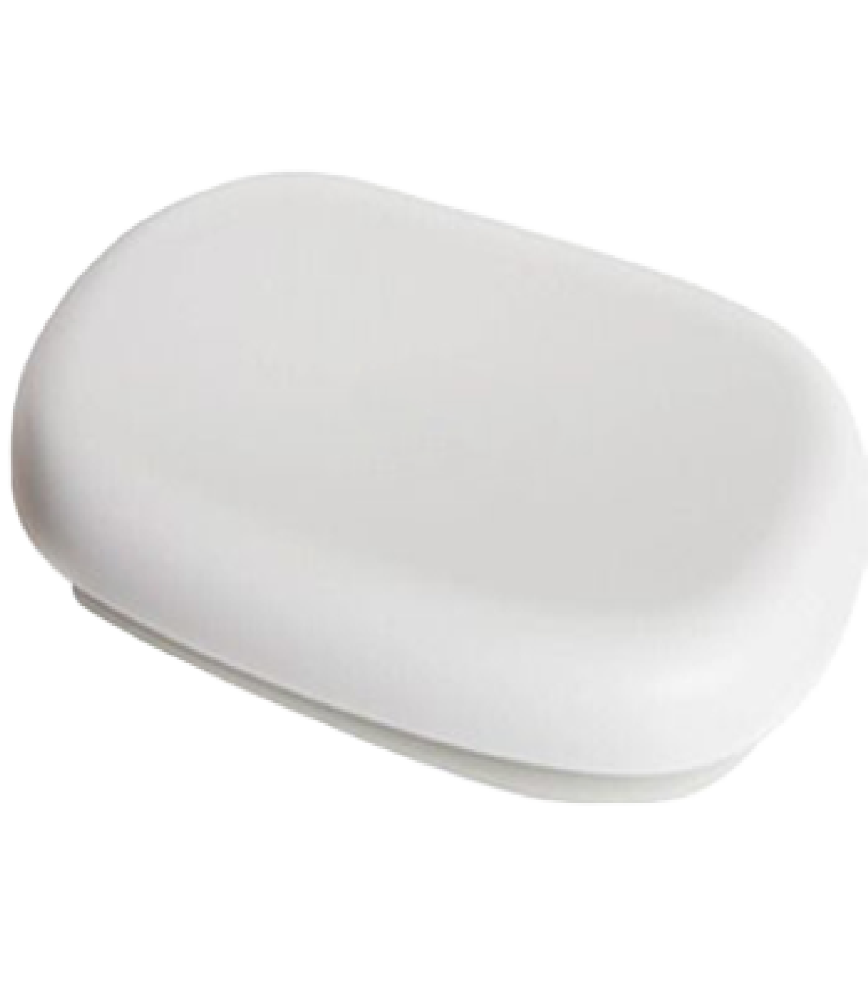

Мобильная связь в труднодоступных населенных пунктах архангельской области
О ПРОЕКТЕ
В Архангельской области с 2021 года мы вместе с операторами связи внедряем практику установки фемтосот — компактных маломощных базовых станций, обеспечивающих мобильную связь поколения 3G в самых труднодоступных местах региона. Эти устройства помогают временно преодолеть цифровое неравенство, предоставляя жителям отдаленных населённых пунктов доступ к современным коммуникациям.
Фемтосоты становятся настоящими спасителями для небольших деревень и посёлков, где раньше мобильная связь была лишь мечтой. Благодаря им местные жители могут легко связываться с родственниками, получать доступ к социальным услугам, а также решать вопросы безопасности, что особенно важно в условиях отдалённости.
Для работы фемтосоте нужно только проводное подключение к Интернету и электропитание. Их компактные размеры и простота установки позволяют разместить оборудование на стенах зданий или опорах, что минимизирует вмешательство в окружающую среду. Энергоэффективность и надёжность фемтосот делают их идеальным выбором для сурового климата Архангельской области, где температурный диапазон может колебаться от -33°C до +45°C.
С момента запуска инициативы установлено 19 фемтосот в разных уголках региона. Каждая из них — это не просто техническое устройство, а мост, соединяющий людей и открывающий новые возможности. Для жителей это возможность быть на связи и оставаться в курсе важных событий.
Мы планируем продолжать эту работу, чтобы связь пришла в ещё большее количество отдалённых пунктов Архангельской области. Это не просто развитие инфраструктуры, а важный шаг к созданию равных условий для каждого жителя, независимо от того, где он живёт.
Фемтосоты Indoor (внутреннего исполнения)
Это устройство для мобильной связи в помещении. Оно обеспечивает стабильную голосовую и интернет-связь с помощью сети 3G (UMTS). Для её подключения требуется проводное интернет-соединение через маршрутизатор, а также подключение к источнику электроэнергии.
Данные фемтосоты размещаются непосредственно в фельдшерско-акушерских пунктах, что в свою очередь позволяет медицинским сотрудникам оперативно реагировать на любые неотложные ситуации, обеспечивая своевременную помощь в критические моменты и быстрый доступ к необходимой информации.
Возможности Фемтосоты Indoor:
Радиус покрытия: в пределах здания - до 30-50 метров в зависимости от условий (стены, этажи и т. д.).
Количество одновременных звонков: максимально до 8 пользователей одновременно (в зависимости от модели оборудования)
Энергоэффективность: устройство потребляет менее 10 Вт при активной работе.
Компактность и лёгкость установки: легко размещается в любом помещении даже на стене.
Безопасность: Как и все фемтосоты, этот тип устройства также поддерживает функции безопасности, такие как шифрование данных, несмотря на ее миниатюрный размер.
Фемтосоты Outdoor (уличного исполнения)

Устройства для уличной установки. Подходят для создания голосовой и мобильной интернет-связи на больших территориях, так как в отличие от фемтосоты Indoor, у них больший радиус покрытия.
Возможности Фемтосоты Outdoor:
Радиус покрытия: до 1 км, что делает устройство подходящим для обеспечения мобильной связи в труднодоступных районах. На радиус покрытия могут оказать существенное влияние имеющиеся в зоне фемтосоты высокие здания и сооружения, деревья, а также неровный рельеф местности и высота подвеса устройства.
Количество одновременных звонков: поддержка до 16 пользователй одновременно.
Энергоэффективность: устройство потребляет менее 22 Вт, что снижает затраты на электроэнергию.
Работа в экстремальных температурах: от -33°C до +55°C, что особенно важно для регионов с суровым климатом.
Компактность и лёгкость установки: небольшие размеры (255x161x126 мм) и вес менее 2,9 кг, установка возможна на стену или столб.
Автоматическое управление помехами, что повышает качество связи.
Фемтосоты Outdoor в населенных пунктах
Кликните на изображение, чтобы узнать больше.
Фемтосоты Indoor в населенных пунктах
Кликните на изображение, чтобы узнать больше.